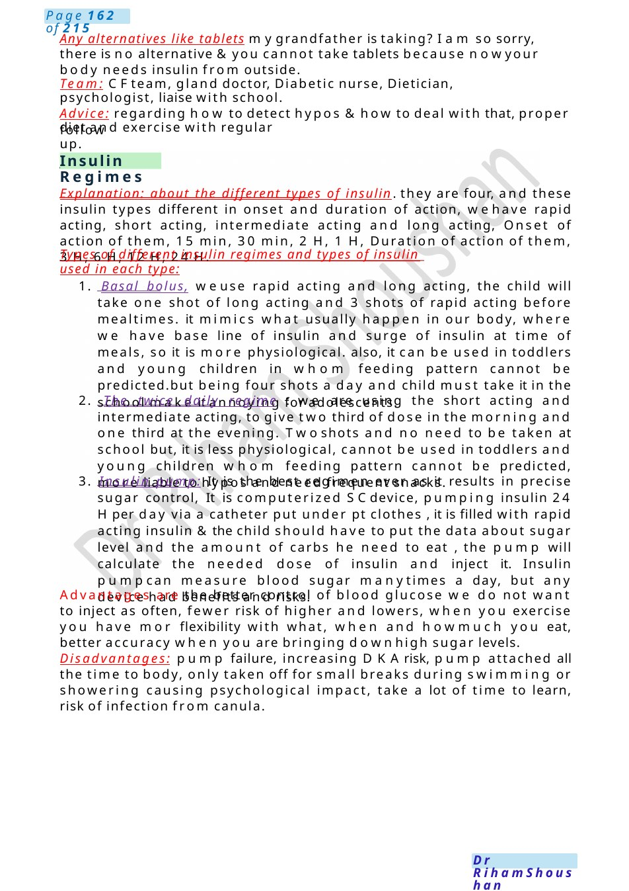
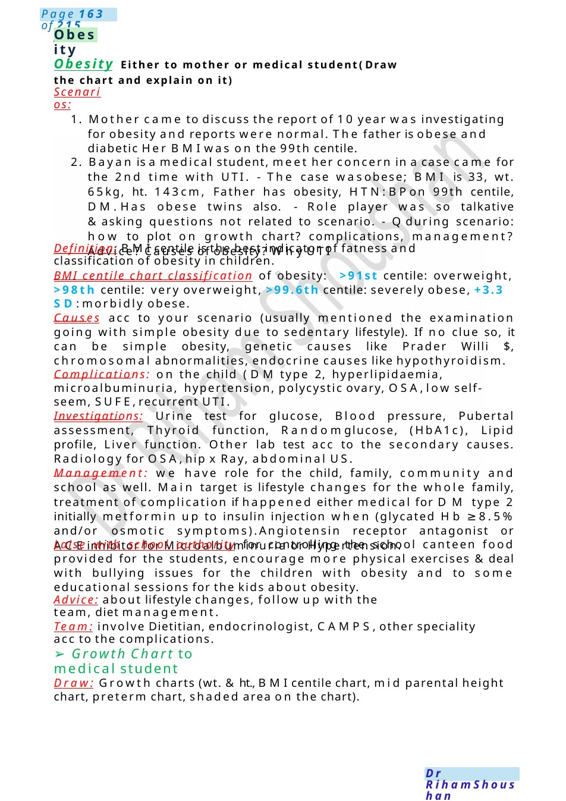

Insulin Regimes
Any alternatives like tablets mygrandfather is taking? I am so sorry, there is no alternative &you cannot take tablets because nowyour body needs insulin from outside. Team: CFteam, gland doctor, Diabetic nurse, Dietician, psychologist, liaise with school.
Scenario Summary
Any alternatives like tablets mygrandfather is taking? I am so sorry, there is no alternative &you cannot take tablets because nowyour body needs insulin from outside. Team: CFteam, gland doctor, Diabetic nurse, Dietician, psychologist, liaise with school.
Full Original Scenario

Insulin Regimes
follow up.
Any alternatives like tablets mygrandfather is taking? I am so sorry, there is no alternative &you cannot take tablets because nowyour body needs insulin from outside.
Team: CFteam, gland doctor, Diabetic nurse, Dietician, psychologist, liaise with school.
Advice: regarding how to detect hypos &how to deal with that, proper diet and exercise with regular
Explanation: about the different types of insulin. they are four, and these insulin types different in onset and duration of action, wehave rapid acting, short acting, intermediate acting and long acting, Onset of action of them, 15 min, 30 min, 2 H, 1 H, Duration of action of them, 3 H, 6 H, 12 H, 24 H.
Types of different insulin regimes and types of insulin used in each type:
1. Basal bolus, weuse rapid acting and long acting, the child will take one shot of long acting and 3 shots of rapid acting before mealtimes. it mimics what usually happen in our body, where we have base line of insulin and surge of insulin at time of meals, so it is more physiological. also, it can be used in toddlers and young children in whom feeding pattern cannot be predicted.but being four shots a day and child must take it in the school make it annoying for adolescents.
2. The twice daily regime : we are using the short acting and intermediate acting, to give two third of dose in the morning and one third at the evening. Twoshots and no need to be taken at school but, it is less physiological, cannot be used in toddlers and young children whom feeding pattern cannot be predicted, more liable to hypos and need frequent snacks.
3. Insulin pump: It is the best regimen ever as it results in precise sugar control, It is computerized SCdevice, pumping insulin 24 Hper day via a catheter put under pt clothes , it is filled with rapid acting insulin &the child should have to put the data about sugar level and the amount of carbs he need to eat , the pump will calculate the needed dose of insulin and inject it. Insulin pumpcan measure blood sugar manytimes a day, but any device had benefits and risks.
Advantages are the better control of blood glucose we do not want to inject as often, fewer risk of higher and lowers, when you exercise you have mor flexibility with what, when and howmuch you eat, better accuracy when you are bringing downhigh sugar levels.
Disadvantages: pump failure, increasing DKArisk, pump attached all the time to body, only taken off for small breaks during swimming or showering causing psychological impact, take a lot of time to learn, risk of infection from canula.

Obesity
Obesity Either to mother or medical student( Draw the chart and explain on it)
Scenarios:
1. Mother came to discuss the report of 10 year was investigating for obesity and reports were normal. The father is obese and diabetic Her BMIwas on the 99th centile.
2. Bayan is a medical student, meet her concern in a case came for the 2nd time with UTI. - The case wasobese; BMI is 33, wt. 65kg, ht. 143cm, Father has obesity, HTN:BPon 99th centile, DM.Has obese twins also. - Role player was so talkative &asking questions not related to scenario. - Qduring scenario: how to plot on growth chart? complications, management? Advice? Causes of obesity? WhyUTI
Definition: BMIcentile is the best indicator of fatness and classification of obesity in children.
BMI centile chart classification of obesity: >91st centile: overweight, >98th centile: very overweight, >99.6th centile: severely obese, +3.3 SD: morbidly obese.
Causes acc to your scenario (usually mentioned the examination going with simple obesity due to sedentary lifestyle). If no clue so, it can be simple obesity, genetic causes like Prader Willi $, chromosomal abnormalities, endocrine causes like hypothyroidism.
Complications: on the child (DM type 2, hyperlipidaemia, microalbuminuria, hypertension, polycystic ovary, OSA,low self-seem, SUFE,recurrent UTI.
Investigations: Urine test for glucose, Blood pressure, Pubertal assessment, Thyroid function, Randomglucose, (HbA1c), Lipid profile, Liver function. Other lab test acc to the secondary causes. Radiology for OSA,hip x Ray, abdominal US.
Management: we have role for the child, family, community and school as well. Main target is lifestyle changes for the whole family, treatment of complication if happened either medical for DM type 2 initially metformin up to insulin injection when (glycated Hb ≥8.5% and/or osmotic symptoms).Angiotensin receptor antagonist or ACEinhibitor for Microalbuminuria or Hypertension.
Laise with school authority for controlling the school canteen food provided for the students, encourage more physical exercises &deal with bullying issues for the children with obesity and to some educational sessions for the kids about obesity.
Advice: about lifestyle changes, follow up with the team, diet management.
Team: involve Dietitian, endocrinologist, CAMPS,other speciality acc to the complications.
- Growth Chart to medical student
Draw: Growth charts (wt. &ht., BMIcentile chart, mid parental height chart, preterm chart, shaded area on the chart).